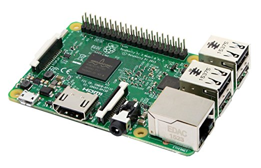

Slides available at:
slides.mobiusconsortium.org/blake/sip_proxy
Created by Blake Graham-Henderson / blake@mobiusconsortium.org
Press ESC to browse slides

Slides available at:
slides.mobiusconsortium.org/blake/sip_proxy
Github repo:
https://github.com/mcoia/evergreen_sip_proxy